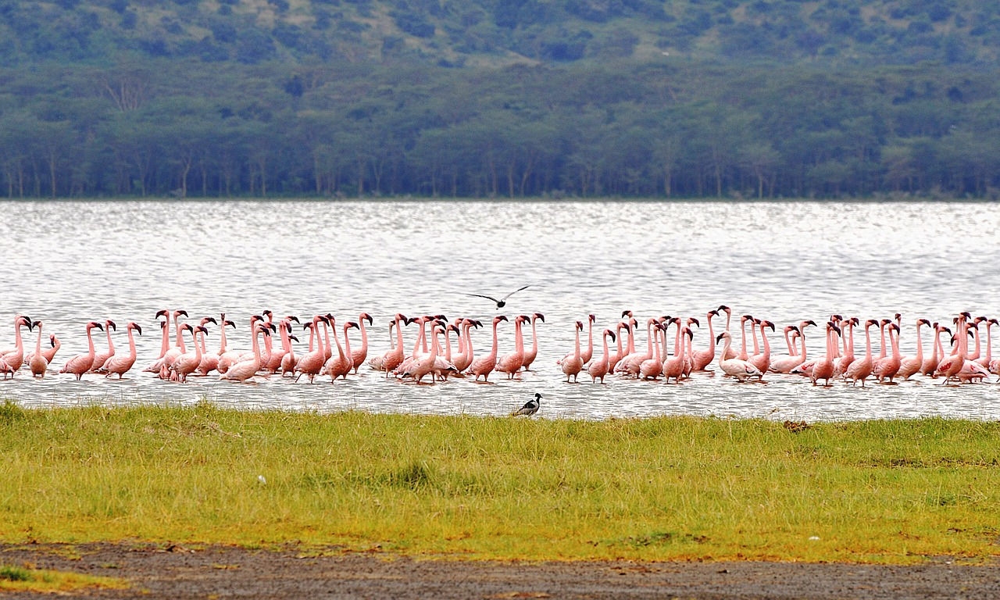
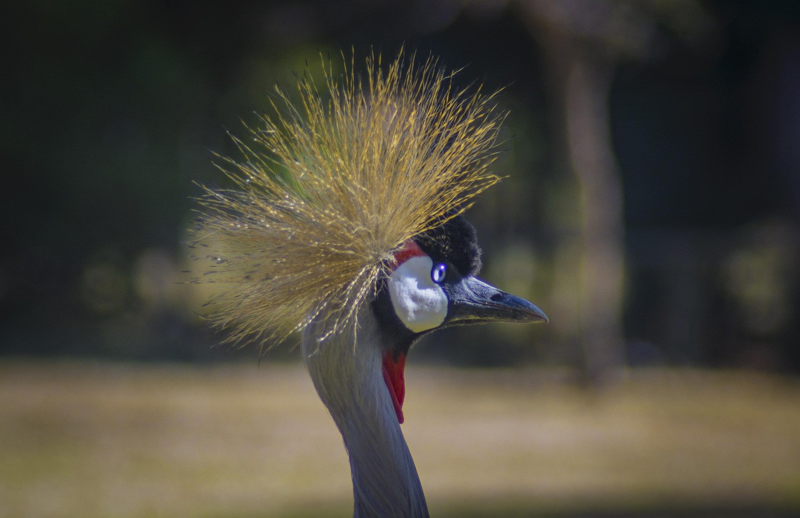
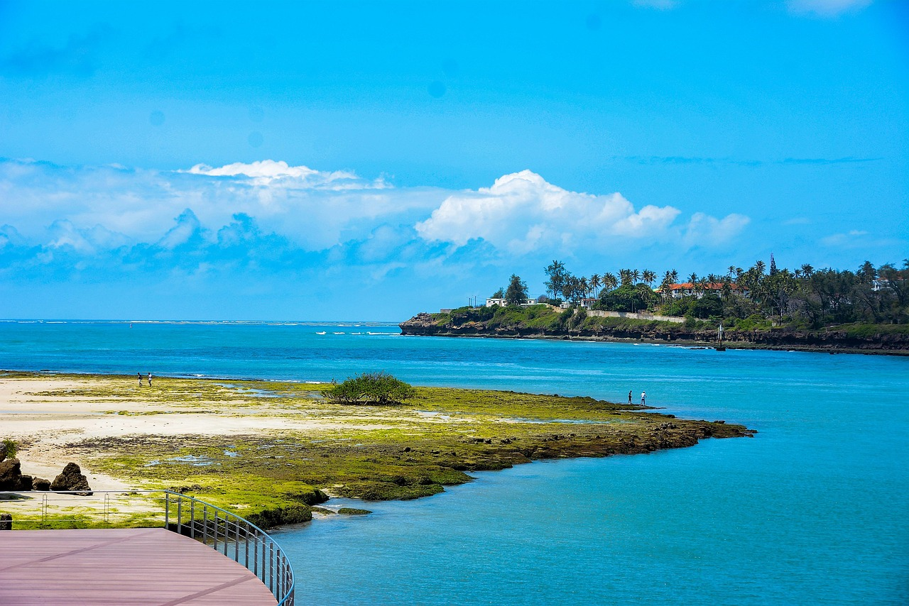

Welcome To Sprintup Services
.png)
.png)

Welcome To Sprintup Services

.png)

Your trusted travel partner for trips across Nairobi, Nakuru, Eldoret, Kisumu, and Kericho. Book your seat with ease and travel smart.
Book NowAt Sprintup Services, we offer more than just travel — we provide a trusted, efficient, and customer-first experience for every trip and parcel delivery across Kenya.
We partner with top transport providers like Modern Coast, Easy Coach, and Dreamline, ensuring reliable, quality service across towns and cities.
Book your seat or parcel in seconds. Enjoy real-time availability, instant ticket generation, and SMS/email confirmations at your fingertips.
Enjoy competitive rates with no hidden fees. Our pricing is fair, honest, and updated to ensure maximum value for your journey.
Pay via M-Pesa, Visa, Mastercard, or on arrival. All payment methods are secure, encrypted, and reliable for peace of mind.
Our support team is always ready to assist you — from booking help to last-minute route changes or queries.
Whether you’re headed to Nairobi, Mombasa, Kisumu, or Kericho — we’ve got you covered with flexible routes and schedules.
Discover Kenya’s most vibrant towns and cities through our convenient transport services. Whether you're traveling for business, leisure, or adventure—Sprintup Services ensures you get there safely and comfortably.

The bustling capital—famous for Nairobi National Park, modern skyscrapers, and rich cultural life.
Peaceful city known for flamingoes, Lake Nakuru, and surrounding wildlife reserves.
Home to Kenyan champions—experience high-altitude training centers and cool weather.
Green tea fields, fresh air, and scenic hills make Kericho the ultimate nature retreat.
Lakeside charm meets urban convenience—Kisumu offers cultural richness and relaxation.
Coastal paradise with white-sand beaches, Fort Jesus, Swahili culture, and ocean breezes.
Real feedback from satisfied travelers who trust Sprintup Services for all their transport and parcel needs across Kenya.

"Booking with Sprintup was super easy and fast. I loved the real-time updates and the customer service!"
- James K., Nairobi

"I sent a parcel from Kericho to Kisumu. Delivered on time and at a great price. Highly recommend!"
- Ann W., Kisumu

"My whole team traveled from Eldoret to Nairobi and everything went smoothly. Clean vehicles and friendly drivers."
- Peter M., Eldoret

"The booking experience was seamless, and the fare was quite affordable. I’ll definitely use them again."
- Linda N., Nakuru

"We had a family trip from Nairobi to Mombasa. The customer service was outstanding, and the trip was safe and fun."
- Mike T., Mombasa

"I booked a last-minute seat and it was confirmed instantly. Great service and helpful team."
- Fatuma A., Kisumu
Have questions about how Sprintup Services works? We’ve compiled answers to the most frequently asked questions to help you plan your trip or send parcels with peace of mind.
Booking is simple! Visit our booking page, choose your departure and destination locations, select your preferred date and seat category, then confirm your booking. You’ll receive an instant confirmation via email or SMS.
Yes, you can book for family, friends, or colleagues. Just ensure their correct details (full name, contact, and ID) are entered during the booking. The confirmation will still go to your provided email or number.
Yes! We offer discounts for return trips, round trips, and group bookings (more than 5 people). These discounts are applied automatically or can be requested through our support team before payment.
We support M-Pesa, Airtel Money, Visa, Mastercard, and cash-on-arrival (for selected routes). Payments are secured using SSL encryption to ensure your safety.
Yes, we offer same-day and next-day parcel delivery services across all our routes. You can drop off the package at our nearest terminal or request pickup. Use the booking page and choose "Parcel Delivery" to get started.
No, it’s not necessary. You can show your digital ticket (PDF, email, or SMS) on your phone at check-in. Please have a valid ID or confirmation code with you.
We use modern, well-maintained shuttles and buses depending on the route. Options include standard, business class, and executive coaches with A/C, Wi-Fi, reclining seats, and onboard charging ports.
Yes. You can reschedule your trip at no extra cost up to 6 hours before departure. Cancellations are allowed up to 12 hours in advance with a small service fee. Contact support for quick assistance.
We currently serve major cities including Nairobi, Kisumu, Eldoret, Kericho, Nakuru, and Mombasa. More routes are regularly added—stay tuned!
Yes. Once your booking is confirmed, we’ll send a digital receipt and ticket to your email or phone. You can also request an official invoice for company reimbursements or personal records.